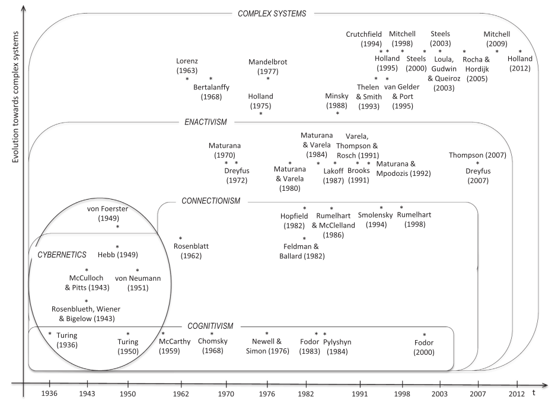
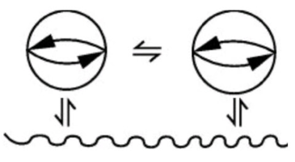

IA e Cognição:
Breve Histórico da Ciência Cognitiva e do Enativismo
Lucas S. Vieira
lucasvieira@protonmail.com
03 de abril de 2021
Quem sou eu?
Discente de Sistemas de Informação pela UFVJM
Interesses: Inteligência artificial, ciência cognitiva, filosofia da mente, teoria da computação, desenvolvimento de linguagens de programação, desenvolvimento de jogos, programação bare-metal
Co-fundador da Common Lisp Brasil
lisp.com.br

@luksamuk luksamuk.codes luksamuk
Objetivo
Mostrar uma linha do tempo do campo multidisciplinar da Ciência Cognitiva.
Dar ênfase em especial para o campo da Inteligência Artificial e suas escolas de pensamento.
Mostrar uma abordagem acadêmica, paralela ao que se discute no uso industrial de IA.
O que é Ciência Cognitiva?
Campo interdisciplinar envolvendo estudos de várias áreas do pensamento e da cognição.
Aqui entram Biologia, Pedagogia, Linguística, Neurociência, Filosofia, Psicologia, Antropologia, Sociologia, Inteligência Artificial…
A ciência cognitiva está situada no pensamento mecanicista, e possui fortes raízes em tal tipo de pensamento.
Mapa histórico

Figura 1: Mapa conceitual do estado da ciência cognitiva (CARVALHO, PEREIRA & COELHO, 2015)
Prelúdio: Frege, Hilbert e Turing
Frege (c. 1884): "O que é um número? O que significa dizer '1'? Como afirmar com certeza que \(1 + 1 = 2\)?"
Hilbert (1900): Lista de 23 problemas matemáticos.
10th Problem: Find a theorem to determine whether a given polynomial Diophantine equation with integer coefficients has an integer solution.
Exemplos de equações diofantinas (tal que \(D = \mathbb{Z}\)):
Deseja-se saber se uma sequência de passos finita existe para determinar (apenas 'sim' ou 'não') se uma equação diofantina possui solução \(\in \mathbb{Z}\).
Alan Turing: "On Computable Numbers, with an application to the Entscheidungsproblem" (1936, corrigido em 1937).
- Turing apresenta um autômato capaz de representar a execução de qualquer sequência de passos finitos que levem a um resultado;
- Turing não "resolve" o problema, mas demonstra que este não pode ser resolvido por uma sequência de passos finitos.
Em outras palavras, ao descrever a Máquina de Turing, descreve-se:
- A noção formal de algoritmo;
- Uma máquina abstrata capaz de representar a execução de algoritmos;
- O 10º Problema não pode ser resolvido com uma sequência finita de passos (um teorema, um algoritmo, um raciocínio estritamente lógico).
Cibernética
Primeiro movimento social acadêmico, direcionado para discussões sobre a perspectiva computacional da mente. Buscava se tornar uma nova ciência da mente.
Tese de Church-Turing: Se um ser pensante opera uma sequência de passos finitos para realizar algum processo cognitivo, então tal processo cognitivo pode ser realizado por uma Máquina de Turing.
Ideias-chave
- Vida e mente baseadas em máquinas que processam informações;
- Estudo interdisciplinar da Teoria dos Sistemas;
- Sistemas auto-organizáveis;
- Uso de lógica matemática na compreensão do sistema nervoso.
Cognitivismo
1956: Simpósio do MIT sobre Teoria da Informação
Participantes de relevância: Herbert Alexander Simon, Noam Chomsky, Marvin Minsky, Allen Newell, Jerry Alan Fodor, John McCarthy…
Ideias-chave
Discutir a possibilidade da construção de modelos computacionais para investigar a cognição humana.
Realidade cognitiva das arquiteturas de computador – processos simbólicos, manipulação de símbolos. Construção de programas diretamente baseados na forma como humanos pensam ao resolver seus problemas.
Críticas
Searle (1980): Experimento mental – Quarto Chinês
"A máquina é semanticamente vazia e opera a linguagem apenas em suas dimensões sintática e léxica"
Contra-crítica: Semântica e inteligência não são características internas da MT ou do cérebro humano, mas sim características relacionais (HAUGELAND, 1982).
Conexionismo
Nome proposto por Feldman e Ballard (1982).
Redescoberta do pensamento cibernético: auto-organização, emergência, propriedades.
Ideias-chave
Arquitetura conexionista: conjunto de unidades de processamento informacional, com inspiração na biologia (ex. neurons, pessoas, etc).
Ações cognitivas descritas em termos da dinâmica ou funcionalidade das unidades enquanto estas interagem com o ambiente e consigo mesmas.
Regra de Hebb (1949): Quanto mais interações, mais forte a conexão.
McCulloch & Pitts (1943): Estabelece fundações para Redes Neurais.
von Neumann (1948): Autorreplicação / Autômatos Celulares.
Rosenblatt (1957-1962): Perceptron.
Conexionistas mostraram que propriedades da memória no cérebro são, claramente, propriedades emergentes de redes neurais (McCulloch & Pitts, 1943; Hopfield, 1982).
Enativismo
Herança da auto-organização do conexionismo.
Representações pautadas em Sistemas Complexos e Dinâmicos: atrator de Lorenz, fractais de Mandelbrot…
Enação: Alternativa naturalista, conectada ao pensamento biológico e ao conexionismo.
A fonte da inteligência está no corpo em ação, de forma que esta seja a natureza da cognição: em ação – en acción – enação.
Enraizado no conceito de autopoiese (auto-produção): O ser vivo produz suas condições de existência.
Acoplamento estrutural: Ambiente e agente perturbam-se e modificam-se mutuamente.
Entidade viva: Histórico de perpetuação no mundo, via acoplamento estrutural e fechamento operacional.
Evolução da espécie: através de deriva natural – seleção natural é sua consequência, agindo sobre organismos que sejam autopoiéticos (vivos).

Figura 2: Acoplamento de terceira-ordem (MATURANA & VARELA, 1987)
Conclusão
O objetivo aqui é apresentar um histórico da Ciência Cognitiva e situar a modelagem computacional a partir da Academia.
As discussões giram em torno de enumerar problemas e melhor compreender cognição. Modelos computacionais são ferramentas para realizar esses experimentos.
Essas ferramentas às vezes são úteis fora da Academia, mas geralmente não têm pretensões megalomaníacas.
Obrigado!
Dúvidas?
Referências
Carvalho, L. L. d., Pereira, D. J., & Coelho, S. A. (2015). Origins and evolution of enactive cognitive science. Biologically Inspired Cognitive Architectures, (16), 169–178. http://dx.doi.org/10.1016/j.bica.2015.09.010
Maturana, H. R., & Varela, F. J. (2001). A árvore do conhecimento. São Paulo: Palas Athena.
Mitchell, M. (2009). Complexity: A Guided Tour. New York: Oxford University Press.
Frege, F. L. G. (1884). The foundations of arithmetic. Evanston, Illinois, USA: Northwestern University Press.
Hofstadter, D. R. (1979). Gödel, Escher, Bach. New York: Basic Books.
Turing, A. M. (1937). On computable numbers, with an application to the Entscheidungsproblem. Proceedings of the London Mathematical Society, s2-42(1), 230–265. http://dx.doi.org/10.1112/plms/s2-42.1.230
McCulloch, W. S., & Pitts, W. (1943). A logical calculus of the ideas immanent in nervous activity. Bulletin of Mathematical Biophysics, 5.
Hopfield, J. J. (1982). Neural networks and physical systems with emergent collective computational abilities. Proceedings of the National Academy of Sciences of the USA, 2554-2558. http://dx.doi.org/10.1073/pnas.79.8.2554.